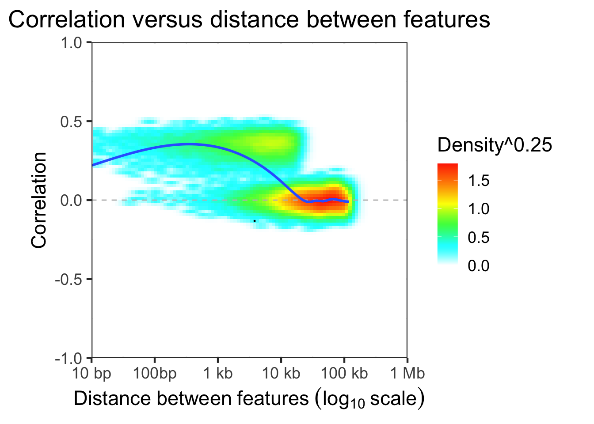
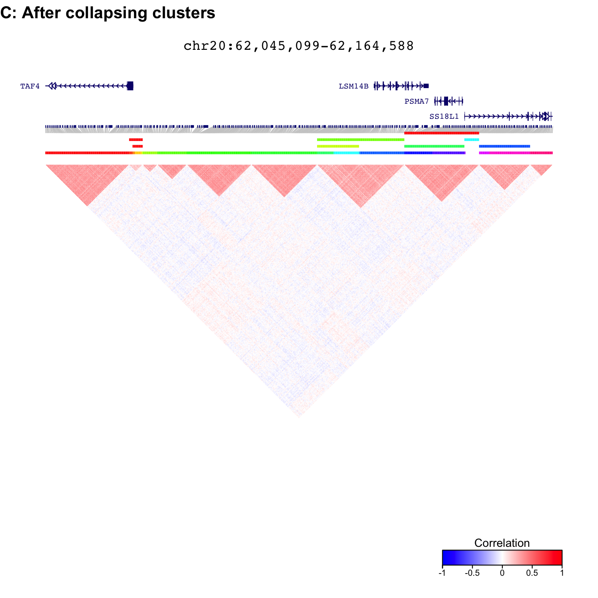
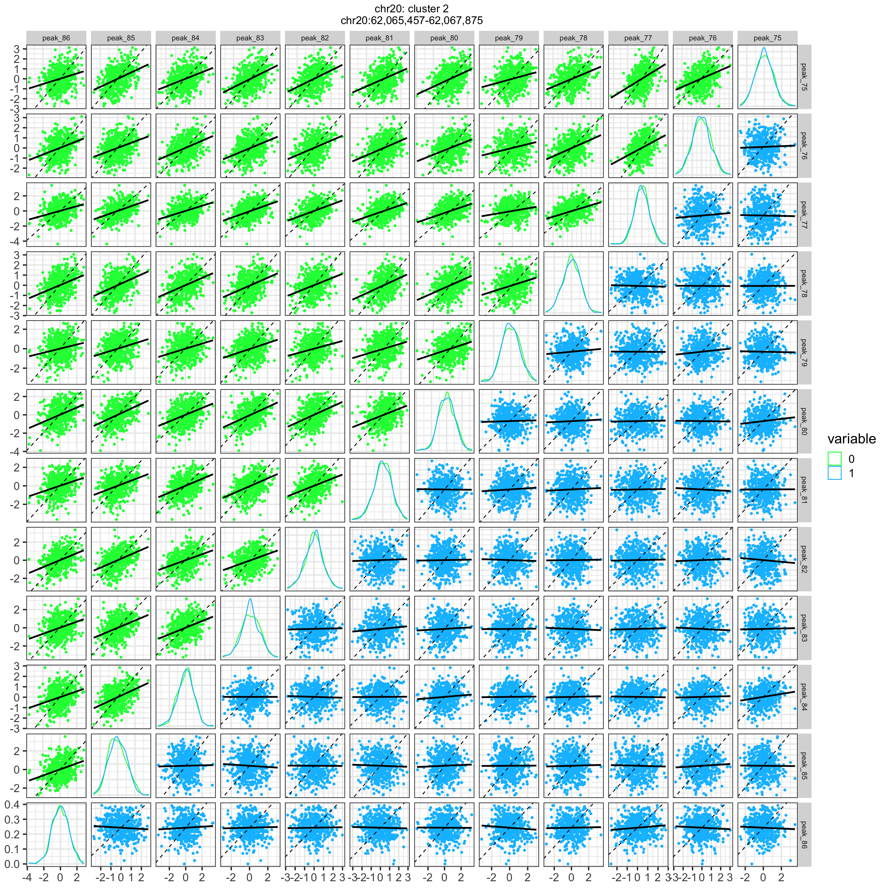

decorate: Differential Epigenetic Correlation Test
Developed by Gabriel Hoffman
Run on 2021-07-23
Source:vignettes/decorate_example.Rmd
decorate_example.RmdStandard analysis compares the differences in magnitude in epigenetic signal between two subsets of a dataset. The decorate workflow evaluates the local correlation structure between nearby epigenetic features and identify clusters of features that are differential correlation between two subsets of a dataset. Epigenetic datasets where decorate can be applied include ChIP-seq, ATAC-seq and DNA methylation.
decorate v1.0.29
Workflow
-
Data normalization and covariate correction
- We assume this has already been perform using standard methods for your assay
- decorate should be run on residuals after removing the effects of confounding variables
-
Compute correlations between local pairs of features
-
Perform hierarchical clustering of features
- built into
runOrderedClusteringGenome()
- built into
-
Produce discrete clusters of features
-
createClusters():can take multiple parameter values to return multiple sets of clusters at different resolutions
-
-
Filter clusters
- Based on strength of correlation
-
scoreClusters():evaluate the strength of the correlation structure of each cluster -
retainClusters():identify clusters that pass a cutoff for strength of the correlation structure. By default filters by LEF, the lead eigen-value fraction, which is the fraction of variance explained by the first eigen-value. Higher LEF values indicate a stronger correlation structure. -
filterClusters():apply filter to clusters based on this cutoff
-
- Identify overlapping clusters and drop if redundant
-
collapseClusters():Collapse redundant clusters identified from using multiple parameter values in step (3). Redundancy of two clusters is evaluated using the Jaccard index, the fraction of epigenetic features shared between two clusters.
-
- Based on strength of correlation
-
Statistical test of differential correlation
-
evalDiffCorr():implements 16 tests of differential correlation with different properties. See here for comparison of methods. I recommend ‘Box.permute’, ‘deltaSLE’, ‘sLED’ to retain power while controlling the false positive rate - merge all results into one data.frame with
combineResults()
-
- Data visualization
-
plotDecorate():plot local correlation structure, clusters of features and genes in the region -
plotCompareCorr():plot correlation structure for two subsets of the data -
plotScatterPairs(): scatter plot for each pair of features for two subsets of the data
-
Analysis of simulated data
library(decorate)
library(GenomicRanges)
library(cowplot)
library(limma)
# load data
data('decorateData')
# Compute residuals with respect to variable of interested plus confounders
design = model.matrix(~ Disease, metadata)
fit = lmFit(simData, design)
residValues = residuals( fit, simData)
# Evaluate hierarchical clustering
# adjacentCount is the number of adjacent peaks considered in correlation
# use Spearman correlation to reduce the effects of outliers
treeList = runOrderedClusteringGenome( residValues, simLocation, adjacentCount=500, method.corr="spearman" )
# Choose cutoffs and return clusters using multiple values for meanClusterSize
# Clusters corresponding to each parameter value are returned
# and then processed downstream
# By using multiple parameter values, epigenetic features are included in clusters
# at different resolutions
treeListClusters = createClusters( treeList, method = "meanClusterSize", meanClusterSize=c(20, 30, 40, 50) )
# Evaluate strength of correlation for each cluster
clstScore = scoreClusters(treeList, treeListClusters )
# Filter to retain only strong clusters
# If lead eigen value fraction (LEF) > 30% then keep clusters
# LEF is the fraction of variance explained by the first eigen-value
clustInclude = retainClusters( clstScore, "LEF", 0.15 )
# get retained clusters
treeListClusters_filter = filterClusters( treeListClusters, clustInclude)
# collapse redundant clusters
treeListClusters_collapse = collapseClusters( treeListClusters_filter, simLocation, jaccardCutoff=0.9)
# Plot correlations and clusters in region defind by query
# get single entry giving range of the region
query = range(simLocation) Summary of clustering
Number of cluster parameters: 4
meanClusterSize = c(20, 30, 40, 50)
Number of total clusters: 57
- in
treeListClusters
Number of clusters after filtering: 56
- in
treeListClusters_filter
Number of clusters after collapsing: 29
- in
treeListClusters_collapse
Make plots
Evaluate correlation structure versus distance
dfDist = evaluateCorrDecay( treeList, simLocation, verbose=FALSE)
plotCorrDecay( dfDist, outlierQuantile=1e-5 )
Plot correlation structure along genome
Load gene database
# load gene locations
# this is ENSEMBL v86 from the hg38 assembly
# but other versions and assemblies are available
library(EnsDb.Hsapiens.v86)## Loading required package: ensembldb## Loading required package: GenomicFeatures## Loading required package: AnnotationDbi## Loading required package: AnnotationFilter##
## Attaching package: 'ensembldb'## The following object is masked from 'package:stats':
##
## filter## Loading required package: ensembldb## Loading required package: GenomicRanges## Loading required package: stats4## Loading required package: S4Vectors##
## Attaching package: 'S4Vectors'## The following object is masked from 'package:base':
##
## expand.grid## Loading required package: IRanges## Loading required package: GenomeInfoDb## Loading required package: GenomicFeatures## Loading required package: AnnotationDbi## Loading required package: AnnotationFilter##
## Attaching package: 'ensembldb'## The following object is masked from 'package:stats':
##
## filter
fig1 = plotDecorate( ensdb, treeList, treeListClusters, simLocation, query)
fig2 = plotDecorate( ensdb, treeList, treeListClusters_filter, simLocation, query)
plot_grid( fig1, fig2, ncol=2, labels=c('A: All clusters', 'B: After filtering') )
Plot after filtering and collapsing redundant clusters
fig = plotDecorate( ensdb, treeList, treeListClusters_collapse, simLocation, query)
plot_grid( fig, ncol=1, labels=c('C: After collapsing clusters'), hjust=0 )
Run test of differential correlation using sLED
Evaluate treeListClusters_collapse, the filtered collapsed set of clusters
library(BiocParallel)
register(SnowParam(4, progressbar=TRUE))
# Evaluate Differential Correlation between two subsets of data
# Use Spearman correlation to reduce the effect of outliers
resDiffCorr = evalDiffCorr( residValues, metadata$Disease, simLocation,
treeListClusters_collapse, method='deltaSLE', method.corr="spearman")
# get summary of results
df = summary( resDiffCorr )
# print results
head(df)## id chrom cluster pValue stat n.perm p.adjust
## 1 40 chr20 2 3.984297e-05 0.0011542191 0 0.0009562313
## 2 30 chr20 3 9.300193e-04 0.0007217765 0 0.0111602311
## 3 20 chr20 4 6.301672e-03 0.0004177436 0 0.0504133770
## 4 20 chr20 7 2.746754e-02 0.0004020404 0 0.1648052448
## 5 40 chr20 9 7.185602e-02 -0.0001746903 0 0.3449089171
## 6 20 chr20 6 9.529629e-02 0.0004449277 0 0.3811851459The id column gives the clustering parameter from runOrderedClusteringGenome(), so cluster 6 with id 10 is different from cluster 6 with id 50. Combine results to merge properties of each cluster into a single data.frame
df_results = combineResults( resDiffCorr, clstScore, treeListClusters, simLocation)
head(df_results)## id chrom cluster pValue stat n.perm p.adjust N
## 1 40 chr20 2 3.984297e-05 0.0011542191 0 0.0009562313 12
## 2 30 chr20 3 9.300193e-04 0.0007217765 0 0.0111602311 9
## 3 20 chr20 4 6.301672e-03 0.0004177436 0 0.0504133770 6
## 4 20 chr20 7 2.746754e-02 0.0004020404 0 0.1648052448 26
## 5 40 chr20 9 7.185602e-02 -0.0001746903 0 0.3449089171 13
## 6 20 chr20 6 9.529629e-02 0.0004449277 0 0.3811851459 13
## mean_abs_corr quantile75 quantile90 quantile95 LEF start end
## 1 0.1875826 0.2148852 0.2366822 0.2484625 0.1703609 62065457 62067875
## 2 0.1843397 0.2106810 0.2366822 0.2473400 0.1941585 62066063 62067875
## 3 0.2106171 0.2260056 0.2481257 0.2549663 0.2545741 62066417 62067325
## 4 0.3702191 0.4085017 0.4338798 0.4433801 0.2175939 62071328 62078427
## 5 0.3330685 0.3826729 0.4064634 0.4214374 0.2323639 62146651 62149161
## 6 0.3092056 0.3520966 0.3790616 0.4096076 0.2208019 62068330 62071263
## width
## 1 2419
## 2 1813
## 3 909
## 4 7100
## 5 2511
## 6 2934Note that permutations are only used for test 'sLED', so is set to zero for all others.
Summary of cluster properties
# Histogram of LEF
ggplot(df_results, aes(LEF, fill=id)) + geom_histogram(alpha=0.7) +
theme_bw(17) + xlim(0,1) +
theme(aspect.ratio=1, legend.position="bottom",
plot.title = element_text(hjust = 0.5)) +
scale_fill_discrete(name = "Requested mean cluster size") +
xlab("Lead eigenvalue fraction (LEF)") + ggtitle("Summarize LEF")
# Histogram of mean absolute correlation
ggplot(df_results, aes(mean_abs_corr, fill=id)) + geom_histogram(alpha=0.7) + theme_bw(17) + xlim(0,1) +
theme(aspect.ratio=1, legend.position="bottom",
plot.title = element_text(hjust = 0.5)) +
scale_fill_discrete(name = "Requested mean cluster size") +
xlab("Mean absolute correlation") +
ggtitle("Summarize absolute correlation")
# Boxplot of number of features per cluster
ggplot(df_results, aes(id, N, fill=id)) + geom_boxplot() +
theme_bw(17) +
theme(aspect.ratio=1, legend.position="bottom",
plot.title = element_text(hjust = 0.5)) +
scale_fill_discrete(name = "Feature per cluster") +
xlab("Requested mean cluster size") +
ylab("Number of features") +
ggtitle("Summarize feature per cluster") +
coord_flip()
Compare correlation structure in two subsets of the data
# extract feature identifiers from most significant cluster
peakIDs = getFeaturesInCluster( treeListClusters_collapse, df_results$chrom[1], df_results$cluster[1], df_results$id[1])
query = range(simLocation[names(simLocation) %in% peakIDs])
locText = with( data.frame(query), paste0(seqnames, ':', format(start, big.mark=','), '-', format(end, big.mark=',')))
# plot comparison of correlation matrices for peaks in peakIDs
# where data is subset by metadata$Disease
main = paste0(df$chrom[1], ': cluster ', df$cluster[1], '\n', locText)
plotCompareCorr( residValues, peakIDs, metadata$Disease) + ggtitle(main)
Compare correlation structure along genome
First, plot correlation structure for controls (metadata$Disease==0). Then, plot correlation structure for cases (metadata$Disease==1).
The cluster located at chr20:62,065,457-62,067,875 has a p-value of 3.984e-05 and a test statistic of 0.00115.
# get location of peaks in this cluster
query = range(simLocation[names(simLocation) %in% peakIDs])
# expand window to include adjacent clusters
window = 2000
start(query) = start(query) - window
end(query) = end(query) + window
fig1 = plotDecorate( ensdb, treeList, treeListClusters_collapse, simLocation, query, data=residValues[,metadata$Disease==0])
fig2 = plotDecorate( ensdb, treeList, treeListClusters_collapse, simLocation, query, data=residValues[,metadata$Disease==1])
plot_grid( fig1, fig2, ncol=2, labels=c('A: Contols (i.e. Disease==0)', 'B: Cases (i.e. Disease==1)') )
Pairwise scatter plots
For all pairs of features in the significant cluster, make a scatterplot for cases and controls seperately.
plotScatterPairs( residValues, peakIDs, metadata$Disease) + ggtitle(main)